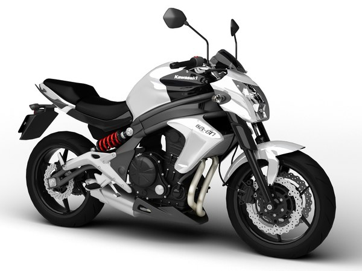
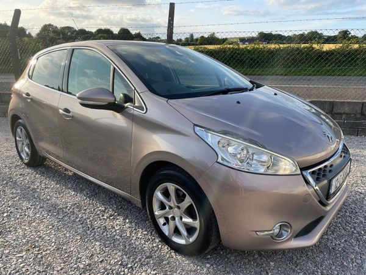

АВТОШКОЛА
УМНИ КОРМИЛА
Може да ни намерите на адрес гр.Варна,
бул.Левски 11.
Телефон:+359 889/879635
E-mail: umnikormila@abv.bg
АВТОШКОЛА
УМНИ КОРМИЛА
Нашата автошкола е създадена през 2003г. с мисията да обучава
бъдещите шофьори и да ги подготви за безопасно и отговорно шофиране.
Целта ни е да Ви помогнем да станете уверен и отговорен шофьор,
способен да се справи с предизвикателствата на пътя.
Ние предлагаме индивидуален и персонализиран подход към обучението.
Разполагаме с модерни автомобили, оборудвани с двойни контролни устройства,
за да осигурим вашата безопасност и комфорт
по време на учебните часове.
Програмата ни за обучение включва както теоретични, така и практически уроци.
Ще научите всички необходими познания за правилата на пътя, пътната
сигнализация и безопасното шофиране.
Учебни кабинети
Присъединете се към нас и нека заедно започнем
вашия път към шофьорска свобода и увереност на пътя!
АВТОШКОЛА
УМНИ КОРМИЛА
Категория А1
Мотоциклети до 125куб.см, мощност до 11kw, съотношение мощност/ тегло - не повече от 0,1 kw/kg
Необходими документи за записване:
- Копие на лична карта
- Копие на диплома за завършено основно образование
За завършилите основно образование след 26.09.2017г. - копие от свидетелство
за завършен 10-ти клас или диплом за средно образование
- Паспортна снимка – 2 бр
- Изисквания:Кандидатът да има навършени 15 години и 11 месеца
- Обучение: 40 часа теория и 20 практика.
- Изпит: Вътрешен и държавен изпит по теория;
Вътрешен и държавен изпит по практика.
- Учебен мотоциклет:YAMAHA YBR125
АВТОШКОЛА
УМНИ КОРМИЛА
Kатегория A2
Мотоциклети до 35kw, съотношение мощност/ тегло - не повече от 0,2 kw/kg
Необходими документи за записване:
- Копие на лична карта, шофьорска книжка и контролен талон
- Копие на свидетелство за основно образование(ако е преди 26.09.2017г) или копие
на диплом за средно образование
- Паспортна снимка – 2 бр.
- Изисквания: Кандидатът да има навършени 18 години
- Обучение: Без придобита категория - 40 часа теория и 20 практика
С придобита кат."В" - само практика.
С придобита кат. "А1" - 7 часа практика
- Изпит: Вътрешни и държавни изпити по теория и практика (4бр.)
*при придобита кат."В",
"А1" - вътрешен и държавен изпит по практика
- Учебен мотоциклет: HONDA CB500F
АВТОШКОЛА
УМНИ КОРМИЛА
Kатегория A
Мотоциклети без ограничение в мощността и обема на двигателя
Необходими документи за записване:
- Копие на лична карта, шофьорска книжка и контролен талон
- Копие на свидетелство за завършено основно образование(ако е преди 2017г) или копие
на диплом за средно образование
- Паспортна снимка – 2 бр
- Изисквания: Кандидата да има навършени 24 години или 2 години стаж от А2 при
навършени 20 години.
Завършено минимум основно образование
- Обучение: Обучението включва 20 учебни часа практика
- Изпит: С придобита кат."В" – вътрешен и държавен изпит по практика
- Учебен мотоциклет:KAWASAKI ER- 6N

АВТОШКОЛА
УМНИ КОРМИЛА
Kатегория B
Автомобили, чиято допустима максимална маса не надвишава 3500 кг и броят на местата
им за сядане, без мястото на водача, не превишава 8.
Необходими документи за записване:
- Копие на лична карта
- Копие на удостоверение за завършен 10-ти клас или диплом за средно образование
- Паспортна снимка – 2 бр.
- Изисквания: Кандидата да има навършени 17 години и 9 месеца
- Обучение: 40 учебни часа по теория
31 учебни часа по практика
- Изпит: Вътрешни и държавни изпити по теория и практика
- Учебни автомобили: VW Golf V, Toyota Yaris, Peugeot 206(AUTOMATIC)

АВТОШКОЛА
УМНИ КОРМИЛА
Kатегория C
Автомобили, различни от категория "D", чиято допустима максимална маса надвишава 3500 кг;
към тях може да се прикачва ремарке с допустима максимална маса не повече от 750 кг
Необходими документи за записване:
- Копие на лична карта, шофьорска книжка и контролен талон
- Копие на свидетелство за завършено основно образование(ако е преди 26.09.2017г) или
копие на диплом за средно образование
- Паспортна снимка – 2 бр
- Удостоверение за психологическа годност (за записване)
- Изисквания: Кандидата да има навършени 18 години, да притежава кат. "В"
- Обучение: 14 учебни часа теория
20 учебни часа практика
- Изпит: Вътрешни и държавни изпити по теория и практика
- Учебен автомобил: Mercedes Atego 818

АВТОШКОЛА
УМНИ КОРМИЛА
Kатегория CE
Състав от пътни превозни средства с теглещо моторно превозно средство от категория "С"
и ремарке с допустима максимална маса над 750 кг
Необходими документи за записване:
- Копие на лична карта, копие на шоф. книжка и контролен талон
- Оригинал и копие на свидетелство за основно образование(ако е преди 26.09.2017г)
или диплом за средно образование
- Паспортна снимка – 2 бр
- Изисквания: Кандидата трябва да притежава кат. "С" със стаж 1 година,
(считано от датата на талона) и да има навършени 21 години
- Обучение: 4 учебни часа теория и 16 учебни часа по практика
- Изпит: Вътрени и държавни изпити по теория и практика – управление на автомобил
с ремарке на учебна площадка и по пътища в населено място
- Учебен автомобил: Mercedes Atego 818 + ремарке
АВТОШКОЛА
УМНИ КОРМИЛА
Kатегория D
Автомобили, с изключение на тролейбусите, предназначени за превоз на пътници, с над 8 места
за сядане, без мястото на водача
Необходими документи за записване:
- Копие на лична карта, шоф. книжка, контролен талон
- Оригинал и копие на свидетелство за основно образование(ако е преди 26.09.2017г) или
диплома за средно образование
- Паспортна снимка – 2 бр
- Удостоверение за психологическа годност (за записване)
- Изисквания: Кандидатът да има навършени 21 год., да притежава кат. С, стаж минимум 2 год
- Обучение: 6 часа теория и 16 практически часа
- Изпит: Полагане на вътрешен изпит и държавен изпит по теория
- Практика – управление на автомобил по пътища в населено място
Документите, които ще са Ви необходими в КАТ,
при подаване на заявление за шофьорска книжка:
Категория B
- Лична карта
- диплома – копие и оригинал (тази, която сте представили при записването сив курса)
- талон от курс в БЧК
- медицинско от личен лекар за съответната категория
Категория С
- лична карта
- шофьорска книжка
- контролен талон
- диплома – копие и оригинал (тази, която сте представили при записването си в курса)
- талон за психологическа годност
- медицинско от личен лекар за съответната категория
Категория СЕ
- лична карта
- шофьорска книжка
- контролен талон
- диплома – копие и оригинал (тази, която сте представили при записването си в курса)
- медицинско от личен лекар за съответната категория
Категория D
- лична карта
- шофьорска книжка
- контролен талон
- диплома – копие и оригинал (тази, която сте представили при записването си в курса)
- талон за психологическа годност
- медицинско от личен лекар за съответната категория
Категория А, А1, А2
- ична карта
- диплома – копие и оригинал (тази, която сте представили при записването си в курса)
- медицинско от личен лекар за съответната категория
- шофьорска книжка и контролен талон (ако притежава такива)
Психотест за шофьори
Психологическото изследване измерва качествата и годността на кандидатите за придобиване
на съответната категория за
правоуправление - C , C1, D, D1 или професионална група.
Чрез теста се изготвя вероятна прогноза на психологическото състояние
на кандидата,
и се издава съответното удостоверение.
На психотест се явяват
- Водачи, които тепърва ще придобиват професионална квалификация за категории C, C1, D, D1,
Tтб ( Тролейбус ), Ттм ( Трамвайна мотриса ).
- Таксиметрови шофьори
- За професионални шофьори на автомобили за обществен превоз на пътници или товари.
- Граждани с чуждестранно свидетелство за управление на МПС, които искат да го заменят с българско.
- Граждани, извършили пътно транспортно произшествие - ПТП.
- За придобиване на правоспособност, след като е отнета шофорската книжка,
поради отнемане на контролните точки; (чл. 157 ал.4 от ЗДвП)
- При временно отнето свидетелство за управление на МПС по реда на чл. 171, т. 1, буква "а" от ЗДвП.
- За водачи, лишени от право за управление на МПС на основание чл. 174, ал. 2 ЗДвП или основание чл. 343
от Наказателния кодекс (за алкохол).
Време на валидност
- Удостоверението е валидно 3 години от датата на издаване.
- При навършване на 65 годишна възраст срокът на валидност на удостоверението е 1 година.
- Таксиметрови шофьори и водачи на автомобили за обществен превоз на пътници или
товари подлежат на
психологическо изследване на всеки 3 години.
Необходими документи за психотест:
- Копие и оригинал на шофьорска книжка;
- Копие на свидетелство за управление на МПС,
- Копие на контролен талон;
Необходими документи за Водачи лишени от правоуправление:
- Копие от Акт за административно нарушение или наказателно постановление, обжалвано по съответния ред.
- При отнета шофьорска книжка – копие от заповедта за отнемане на свидетелството и съдебно решение,
както и удостоверение от МВР за изтърпяно наказание;
- Чужденци или български граждани с чуждестранно свидетелство – паспорт или лична карта и копие от
страницата на българския документ за самоличност с постоянния адрес.
БЧК – курс за кандидат-шофьори
Този курс е предназначен за кандидат-водачи на МПС и може да бъде посетен преди,
по време или след основния шофьорски курс
за управление на МПС.
Курса на български
червен кръст за оказване на първа долекарска помощ ще Ви научи как, ако ви се наложи
да поддържате живота
на пострадалия докато пристигне медицинска помощ. Какво трябва
да се прави при спиране на сърцето, дишането, кръвотечение,
при счупвания, навяхвания,
размествания, изгаряне измръзване и други подобни. Първата помощ е изключително важна
когато
става въпрос за живота и здравето на хора. Това е непосредствената грижа, следваща
какъвто и да е вид медицинско извънредно
положение.
Курса на български червен кръст е 8 учебни часа, които се провеждат в рамките на един ден от
08.30 – 16,00 часа.
Таксата за курса на български червен кръст се заплаща на място при започване на курса.
Тя не влиза в цената на обявения
шофьорски курс.
052 /61 26 74
052 /61 44 98
Адреса на БЧК – Варна е:
Варна 9000
ул. “Братя Шкорпил” №3

АВТОШКОЛА
УМНИ КОРМИЛА
Искате ли наистина да се научите да шофирате?
Очакваме от вас
желание и мотивация и в замяна
ще ви дадем качествено и ефективно обучение.